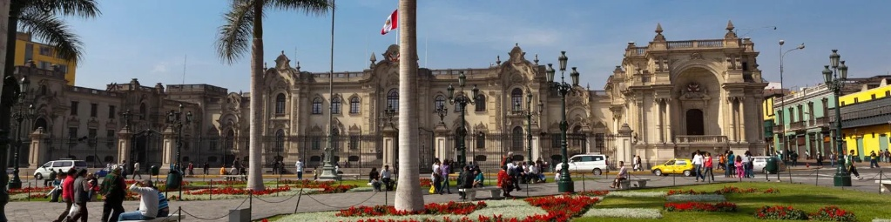
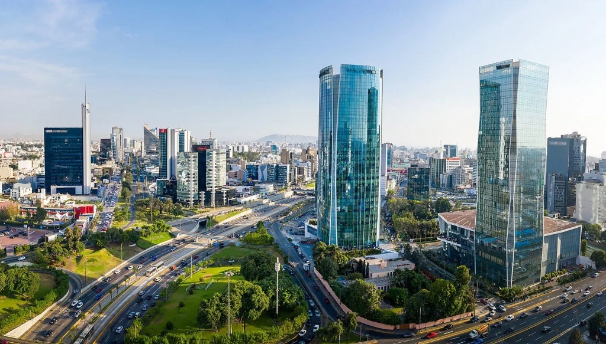

Descubre la Lima
que pocos conocen
Lugares increíbles y poco conocidos que esperan ser explorados.

Lugares increíbles y poco conocidos que esperan ser explorados.

Recorre Barranco y el Centro Histórico y encuentra arte en cada esquina.
Desde el Morro Solar hasta La Herradura, Lima tiene perspectivas que te sorprenderán.
Selecciona una categoría para descubrir joyas ocultas de la ciudad.
Ubicado en los límites menos transitados de Barranco, este pequeño malecón ofrece bancos de madera antiguos bajo la sombra de sauces, ideales para ver el atardecer limeño sin las aglomeraciones del Parque del Amor.
Barranco · Acceso Libre
Cómo llegar →Escondido en un antiguo pasaje del siglo XIX en el Centro Histórico, este lugar tuesta su propio café traído de Chanchamayo. Su patio interior lleno de plantas y azulejos coloniales te transportará al pasado de Lima.
Cercado de Lima · $$
Ver Carta →Pronto podrás visualizar y filtrar los puntos secretos directamente usando geolocalización.
Ayúdanos a expandir el mapa compartiendo ese rincón especial que solo tú conoces de la capital.
La gran mayoría son miradores, parques o pasajes públicos de acceso gratuito. En el caso de cafeterías o centros culturales independientes, especificamos una referencia de rango de precios.
Nuestro equipo visita presencialmente cada sugerencia enviada por la comunidad antes de añadirla oficialmente al catálogo web para asegurar su accesibilidad y seguridad.